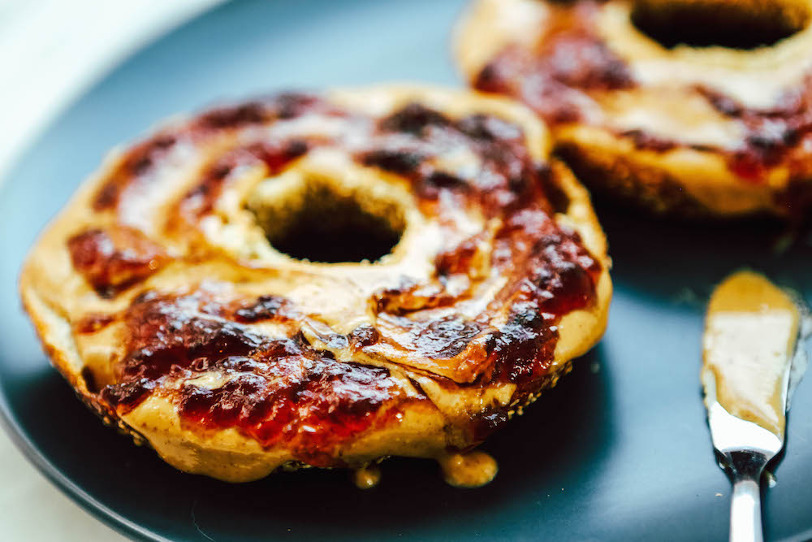

Peanut Butter & Jam Bagel

This is one of my favorite pre-workout meals. It has the right balance of carbs and fats to fuel you for your workout.
Make sure to eat this no more than 45 minutes before your weight-lifting sesh!
Ingredients:
- Bagel
- Regular, or reduced sugar strawberry jam
- Organic peanut butter or cashew butter
- Toaster
Steps
- Slice your bagel in half and put it into the toaster
- Once your bagel reaches a gold-like toasty texture, take it out
- Add 30ml of strawberry jam on one half of the bagel
- Add as much peanut butter as you like on the other half
- Put them together and squeeze that bad boy
- Enjoy!!
Click here to go back to the recipes page